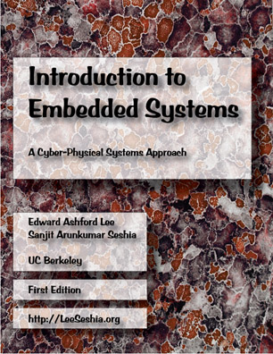

|
 |
Lee and Seshia, Introduction to Embedded SystemsThis book is intended for students at the advanced undergraduate level or the introductory graduate level, and for practicing engineers and computer scientists who wish to understand the engineering principles of embedded systems.
Hardback: First Edition, Printing 1.08 (LuLu.com) Chinese Translation: Chinese Translation (China Machine Press) Download: First Edition, Version 1.08 (24 Mbytes). Lab Book: Jensen, Lee, and Seshia, An Introductory Lab in Embedded and Cyber-Physical Systems. See also other Resources for Instructors Please cite this book as:
Please send any and all corrections, comments, and suggestions to either or both of the authors below |
Sanjit A. Seshia
To read this on an iPad, we recommend using GoodReader, which can download the book directly from the web (just enter leeseshia.org). But any app that can read PDF files should do. To read this on a computer, you can use:
- Adobe Acrobat Reader, a free download for reading PDF files. Sadly, by default, hyperlinks are not very useful because there is no back button. You can enable a back button by selecting Customize Toolbar in the Tools menu. Near the bottom of the extensive list of options are two options labeled "Previous View" and "Next View". Enabling those will make reading more pleasant.
- Adobe Digital Editions, a free download with a convenient two-page spread display format. Sadly, hyperlinks are not very useful because there is no back button nor any option to add one.